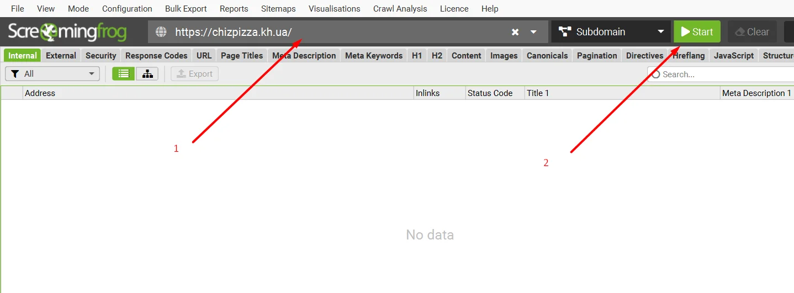
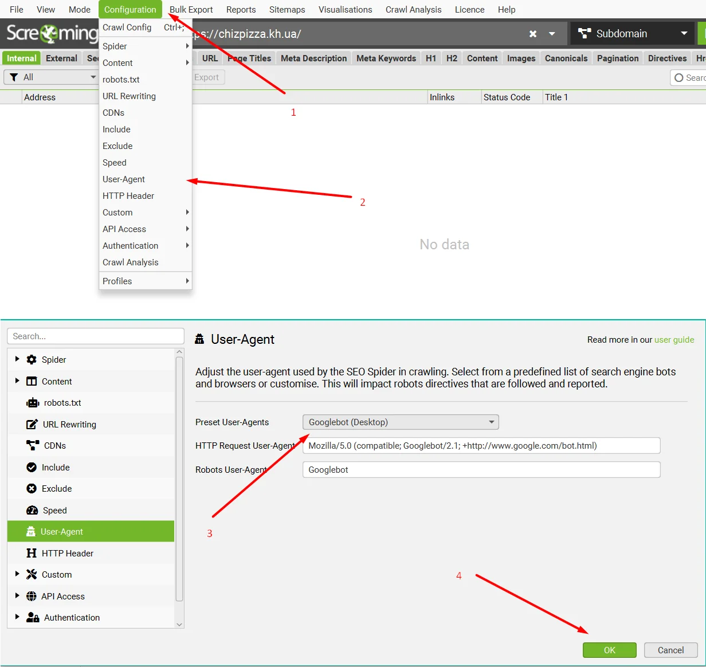
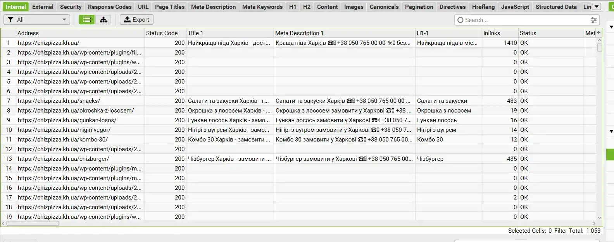
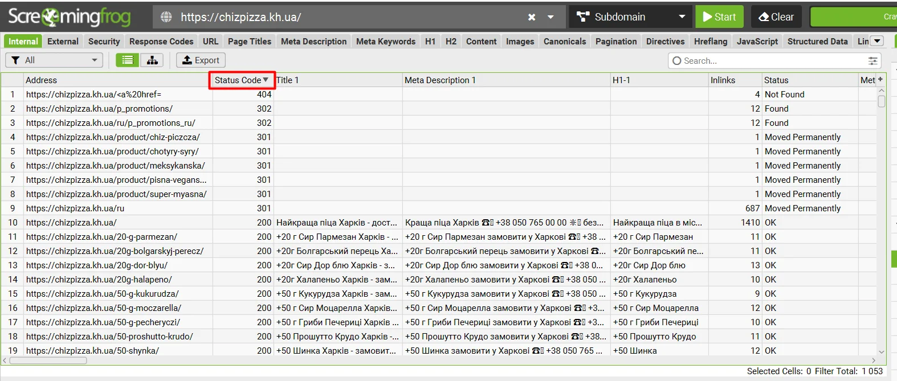

У цій статті я зібрав короткий мануал для початківців SEО-фахівців, які займаються оптимізацією, в якій їм допоможе Screaming Frog. Я опишу найголовніші функції, необхідні для аналізу сайту, без зайвої води та непотрібних функцій.
Отже, почнемо сканувати сайт. Все дуже просто, вставляємо домен у верхній рядок у програмі та натискаємо кнопку Start.
Тут трапляється, що сайт закрив сканування для таких програм, як Скрімінг Фрог. У такому випадку, у верхній панелі ми натискаємо Configuration > User-Agent і у вікні вибираємо Google (Desktop) і тиснемо OK. Після цього натискаємо Start.
Далі, чекаємо, поки програма відсканує весь сайт.
Ми відсканували сайт і бачимо перед собою багато панелей, стовпців та інше. Зараз я поясню найпотрібніші параметри, які нам потрібні.
Перше, це велика таблиця з даними про посилання, у ній ми можемо знайти найнеобхіднішу інформацію - код відповіді (200, 300, 400, 500), title, description, H1. Стовпці можна виставляти у будь-якому порядку, можете виставити, як у мене на попередньому скріншоті. Також, натиснувши на назву стовпця, ми можемо відсортувати дані від А до Я, від Я до А, від більшого до меншого, від меншого до більшого.
На минулому скріншоті я відсортував Status Code за зменшенням, і ви могли помітити, що на нашому сайті є 404, 302 та 301 посилання. І тут найголовніше питання.